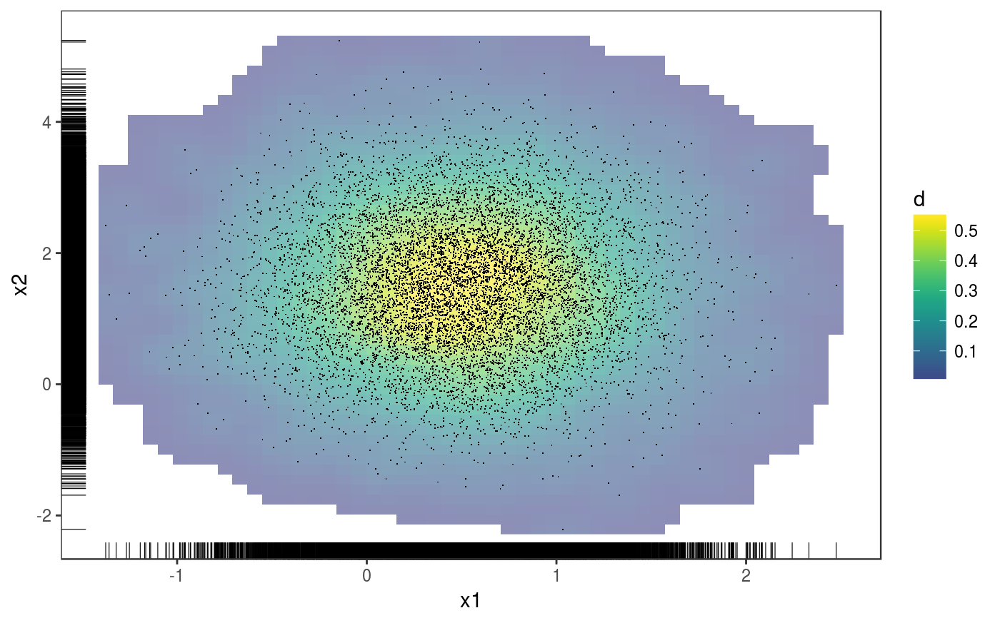
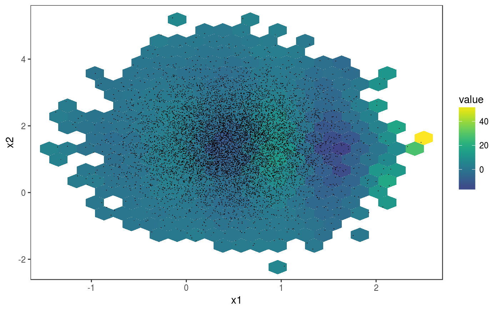
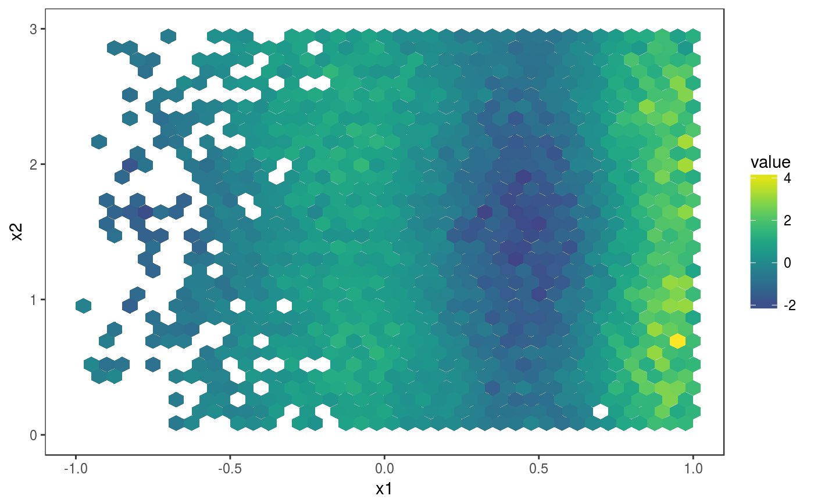
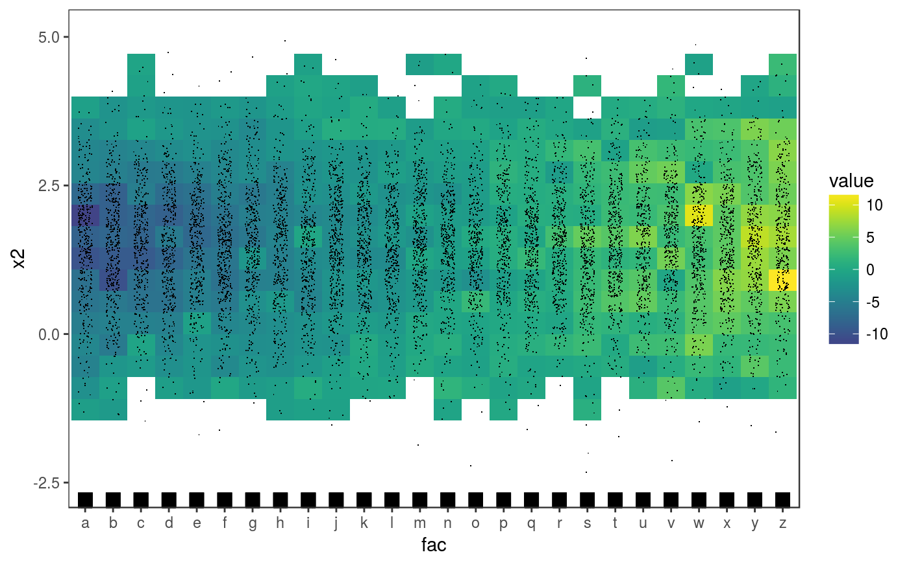
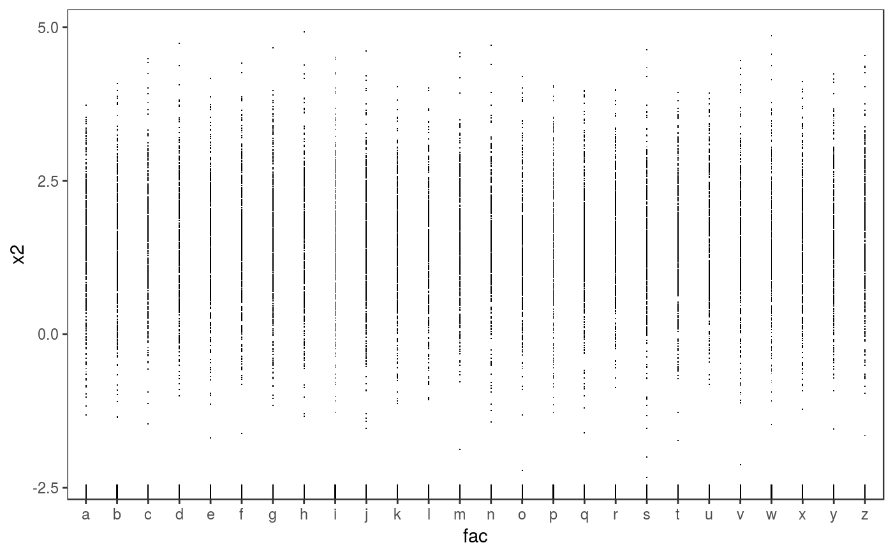
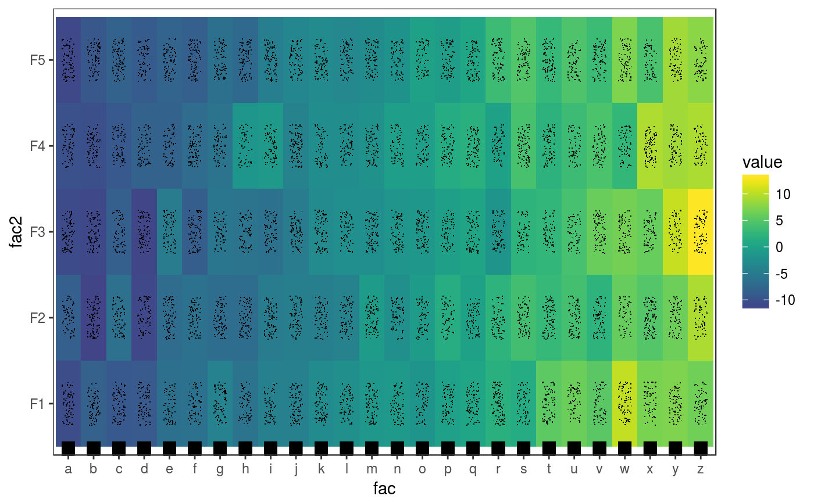

This function extracts the residuals of a fitted GAM model, and plots them according to the values of two covariates. Then several visual residuals diagnostics can be plotted by adding layers.
check2D(o, x1, x2, type = "auto", maxpo = 10000, na.rm = TRUE)
| o | an object of class |
|---|---|
| x1 | should be either a single character or a numeric vector.
In the first case it should be the name of one of the variables in the dataframe used to fit |
| x2 | same as |
| type | the type of residuals to be used. See residuals.gamViz. |
| maxpo | maximum number of residuals points that will be used by layers such as
|
| na.rm | if |
An object of class c("plotSmooth", "gg").
library(mgcViz); #### Example 1: Rosenbrock function # Simulate data n <- 1e4 X <- data.frame("x1"=rnorm(n, 0.5, 0.5), "x2"=rnorm(n, 1.5, 1)) X$y <- (1-X$x1)^2 + 100*(X$x2 - X$x1^2)^2 + rnorm(n, 0, 2) b <- bam(y ~ te(x1, x2, k = 5), data = X, discrete = TRUE) b <- getViz(b, nsim = 50) # Plot joint density of observed covariate x1 and x2 check2D(b, x1 = "x1", x2 = "x2") + l_rug() + l_dens(type="joint", alpha=0.6) + l_points()# Look at how mean of residuals varies across x1 and x2 check2D(b, x1 = "x1", x2 = "x2") + l_gridCheck2D() + l_points()# Can't see much in previous plot, let's zoom in central area, where most # data is. Here we can clearly see that the mean model is mispecified check2D(b, x1 = "x1", x2 = "x2") + l_gridCheck2D(bw = c(0.05, 0.1)) + xlim(-1, 1) + ylim(0, 3)# Fit can be improved by increasing k in the bam() call #### Example 2: checking along factor variables # Simulate data where variance changes along factor variable "fac" n <- 1e4 X <- data.frame("x1"=rnorm(n, 0.5, 0.5), "x2"=rnorm(n, 1.5, 1)) X$fac <- as.factor( sample(letters, n, replace = TRUE) ) X$fac2 <- as.factor( sample(c("F1", "F2", "F3", "F4", "F5"), n, replace = TRUE) ) X$y <- (1-X$x1)^2 + 5*(X$x2 - X$x1^2)^2 + 0.1*as.numeric(X$fac) * rnorm(n, 0, 2) b <- bam(y ~ te(x1, x2, k = 5) + fac + fac2, data = X, discrete = TRUE) b <- getViz(b, nsim = 50) # Check standard deviation of residuals along covariates "x1" and "fac" a <- check2D(b, x1 = "x2", x2 = "fac") a + l_gridCheck2D(gridFun = sd) + l_rug() + l_points()# Points and rug are jittered by default, but we can over-ride this a + l_rug(position = position_jitter(width = 0, height = 0)) + l_points(position = position_jitter(width = 0, height = 0))# Check standard deviation of residuals along the two factor variables a <- check2D(b, x1 = "fac", x2 = "fac2") a + l_gridCheck2D(gridFun = sd, bw = c(1, 4)) + l_rug() + l_points()